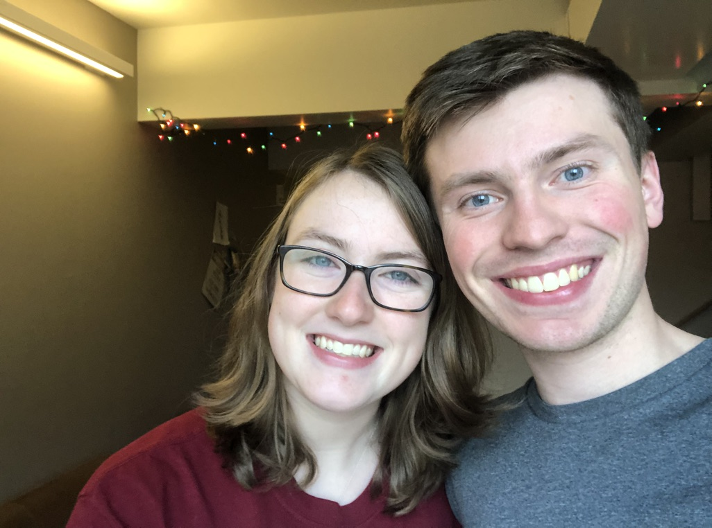
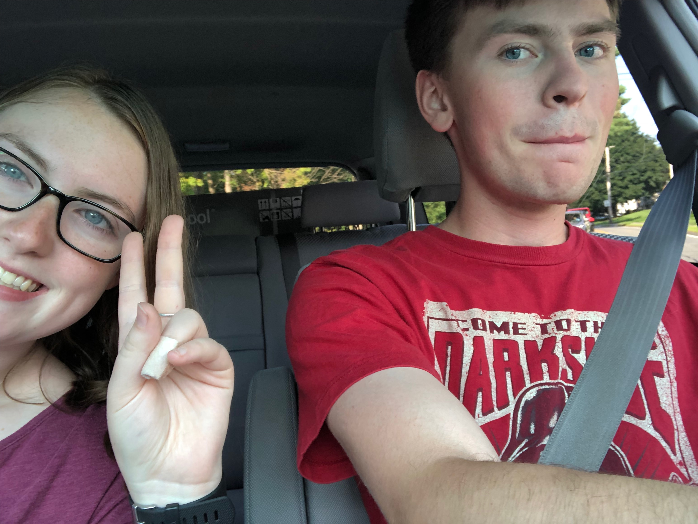
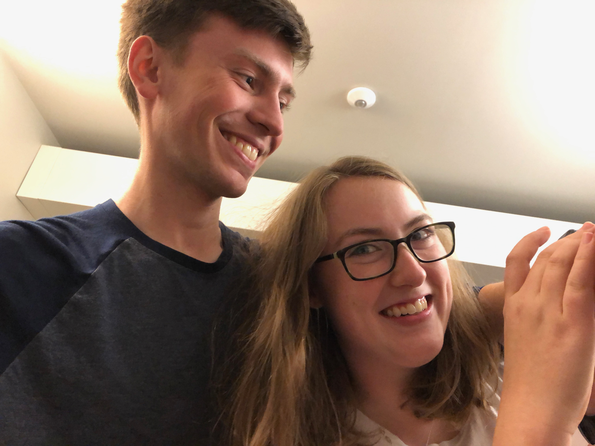

I know I only make these websites when times seem at their worst.
And I know that this actually shows some of the issues you point out to me.
How I don't show my love or appreciation enough.
I know I don't. I do love you, more than anything. You are the first person I tell anything to.
You're who I go to. You were the first person I told about Charles River. If I have questions on anything or need advice I always go to you.
I trust you.
I also know that just like me, you have your limitations.
I take full responsibility for physics. I know you can still do it and I'm very proud of you for continuing with it.
It isn't incredibly easy but I know that if you genuinely sit down and focus and pay attention and attempt at the work, then you'll receive an A.
I take responsibility for a lot of things. And even though I know this won't be a good metaphor (i think that's what it is), I'm going to say it anyways
It's politics, there's two sides. And while it seems like both sides are against each other at times, they both want what is best for the collective whole.
They go about things differently and have differing ideas about what will make things work in the best way.
However, when things go wrong it is never one side's fault.
It is also never one side's responsibility to fix.
The best solutions come after days of talks and meetings to come up with solutions that benefit both parties and (hopefully) the collective whole
Nothing can be fixed in a day, and that goes for anything in life.

Clear minds are what prevail. One cannot expect things to get better the next day and then be upset when they are not.
I'm not saying this explicitly to you or me. This goes for all sides.
To work towards a solution takes time and effort that both parties need to put in.
Although I'm not a politician, my understanding of what politics should be is greater than most that study it.
And I'm not being arrogant there, it's just logic of how the world needs to be to get things done.
From what I've thought about and said, I think there are things we both need to work on.
I know I've been the quiet one in this relationship. I'm not much of a talker. I think that in order to help things I should say more about what is on my mind.
But as all speakers know, saying more things aloud means nothing if there is no listener.
This isn't something against you or anything, but sometimes I feel as though you don't really listen to me. I'm aware that most of the things I say are boring or hard to understand.
And I don't mean it as you never listen to me because I know you do. All I ask is for a more open minded listening experience.
That sounds like some new Disney attraction slogan or something.
But in all seriousness, I want to know that I can always talk about any subject with you and you won't dismiss it because it doesn't make sense to you or because it makes you upset or stresses you out.
That's where some of these problems stem.
I truly believe that we have good conversations, they just get cut off or I guess sometimes never truly start, because one of us just isn't interested.
I know that CS is boring, especially if you don't know a lot about it, but I love it and I want to be able to always talk about it with you and share it with you.
Sometimes I think I can't because I think you won't listen or 5 minutes into me talking about it you'll just change the subject.
And this goes for me too. I know that I have done the same when it comes to you talking about something Disney or travel related. I'm trying to get better at it.
I truly believe, and it is up to you whether you want to try it or not. But I truly believe that all issues with talking or communication can be solved by listening.
I know I don't show it but I really do love you and want to spend as much time with you as possible.
I know you'd tell me that words don't mean anything if there's no actions.
I know it seems as though I've made no actions at all.

But I have.
I do everything I can to help you out.
I always make sure I'm there for you whether you want me there or not.
I always try to keep a smile on your face whether you think it's an appropriate time for jokes or not.
I always share as much as I can with you, whether it be knowledge, food, money, or even just a place to sit and do work whether you want it or not.
I don't do these things to get on your good side or because I want something. I do it out of love.
Although I may not always directly say it, everything I do for you is out of love.

That's why it pains me every time I hear you say that I don't say it enough.
That's why I always seem so confused when you say that I don't say it enough.
Because to me, everything I do, I do it for you.
It's how I tell you that I love you.